Voorkennis
Wat is een electron?
Waar bestaat een electron uit?
Een elektron, is een elementair deeltje, elementair betekende dat het niet verder verdeeld kan worden in andere gedeeltes (zover de wetenschap nu kan meten). Dit deeltje zorgt bijvoorbeeld voor elektrische geleiding/stroom, is het polair van de proton in het atoom, en heeft een lading van -1e (min een electronlading) (-1.6022x10^-19 Coulomb).
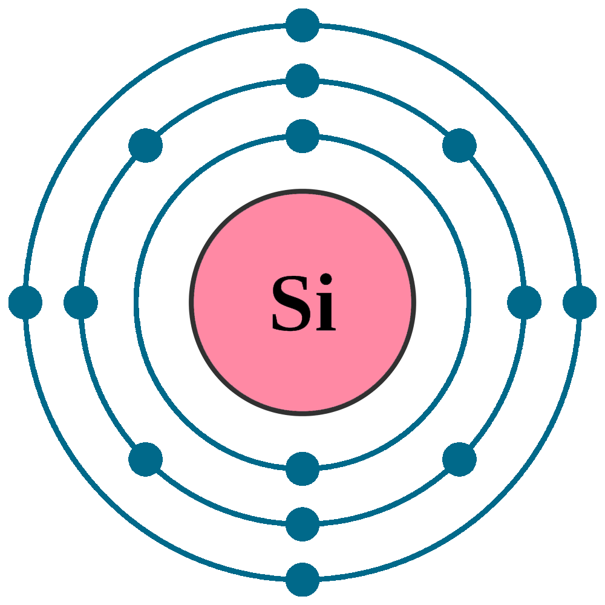 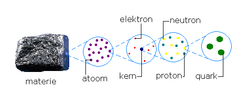
Een electron is deel van de leptonen fermionen familie en daaronder weer uit de leptonen. Ze worde gezien als de "eerste generatie aan materie", waarbij het een van de bouwblokken is van alle materie die er is.
Wanneer het zich bevindt bij een magnetisch veld ondervinden ze Lorenzkrachten. Dit kan bijvoorbeeld toepassing hebben voor het opwekken van elektrische energie vanuit bewegingsenergie, waarbij magneten een magnetisch veld vormen bij rotatie en daarbij dan weer energie kunnen opwekken vanuit beweging.
Wat is een CPU?
Waar staat CPU voor?
CPU is een afkorting en staat voor Central Processing Unit. Of in het Nederlands, Centrale Processie Eenheid.
Wat doet een CPU?
Voor elke computer is een centrale processor nodig om computaties te hanteren. Denk aan een Calculator, waarbij een mini, energie efficiente processor in zit om berekeningen te hanteren.
Terwijl een CPU goed is voor simpele brekeningen, is het niet goed voor tegelijkertijde complexe berekeningen. De CPU is goed voor regelrechte, eenstapscalculaties, berekeningen die stapsgewijs worden uitgevoerd. Een GPU (of Grafische Processie Eenheid) is juist goed in tegelijkertijdse berekeningen, zoals het berekenen van wat één van de miljoenen pixels op een beeldscherm moet zijn in een videospel.
Voor een standaard beeldscherm is het 2,1 miljoen pixels en voor een 4K UHD scherm is het 8,3 miljoen. Vermenigvuldigd met de verversingssnelheid is hoe veel berekeningen een GPU moet doen om pixels te laten zien op het beeldscherm. Een standaard beeldscherm heeft een verversingssnelheid van 60. (60Hz of 1/60e seconde). Een standaardbeeldscherm doet dus 124 miljoen berekeningen elke seconde. -- Gelukkig heeft een goedkope GPU als de GT710 een snelheid van 954MHz (954 miljoen verversingen), dus 954 miljoen berekeningen per seconde, en kan dus gemakkelijk een beeld laten zien op een monitor zonder te veel andere berekeningen achteraf, maar zou wel moeite hebben met een 4K UHD beeldscherm op een standaard verversingssnelheid, waarbij het 500 miljoen berekeningen kost, de helft van zijn berekensnelheid. Het zou onmogelijk zijn voor de GT710 om een hoge snelheidsmonior van 144Hz te kunnen opereren want dat zou 1,2 miljard berekeningen kosten, wat net te hoog is (circa 70MHz) ervoor.
Een CPU zou gemakkelijk een standaardbeeldscherm kunnen opereren mits het goed stapsgewijs berekenbaar is, want CPU's opereren in de GHz in plaats van MHz, waarbij het huidigste record 9.13GHz is.
Wat zijn de onderdelen van een CPU?
De CPU architectuur, als vergroot naar macro schaal, zijn eigenlijk niks anders dan standaard elektrische circuit componenten, voornamelijk transistoren. De moeilijheidsgraad van deze componenten maken, in elkaar sleutelen, laten werken en alles in een component zetten is gedurende de jaren steeds moeilijker geworden.
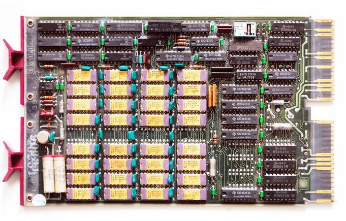 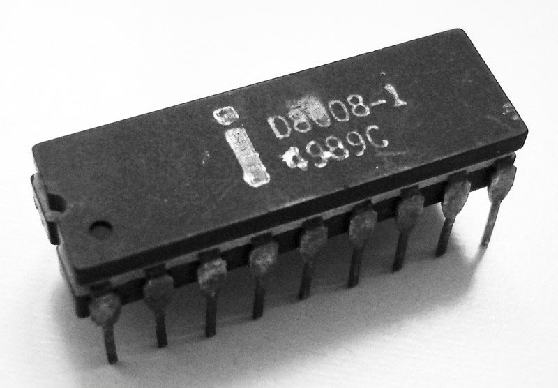 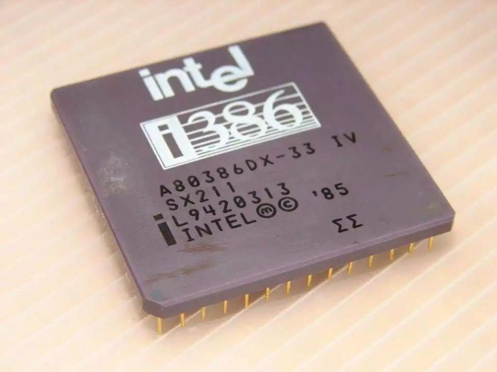 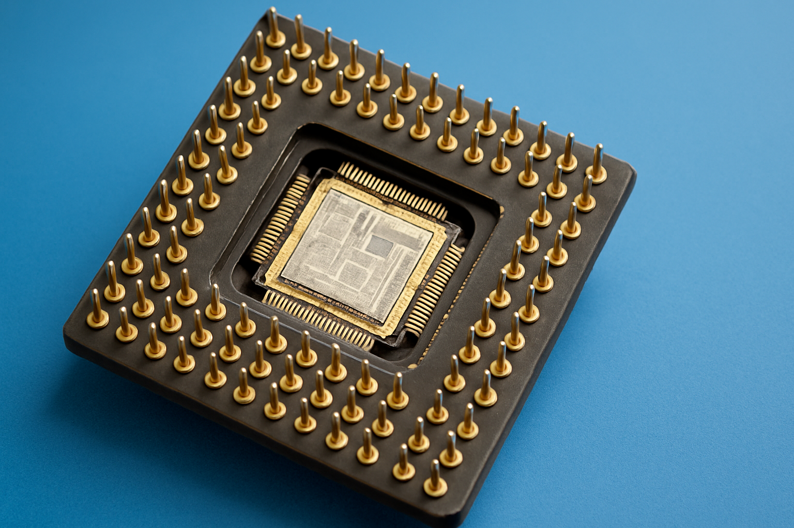 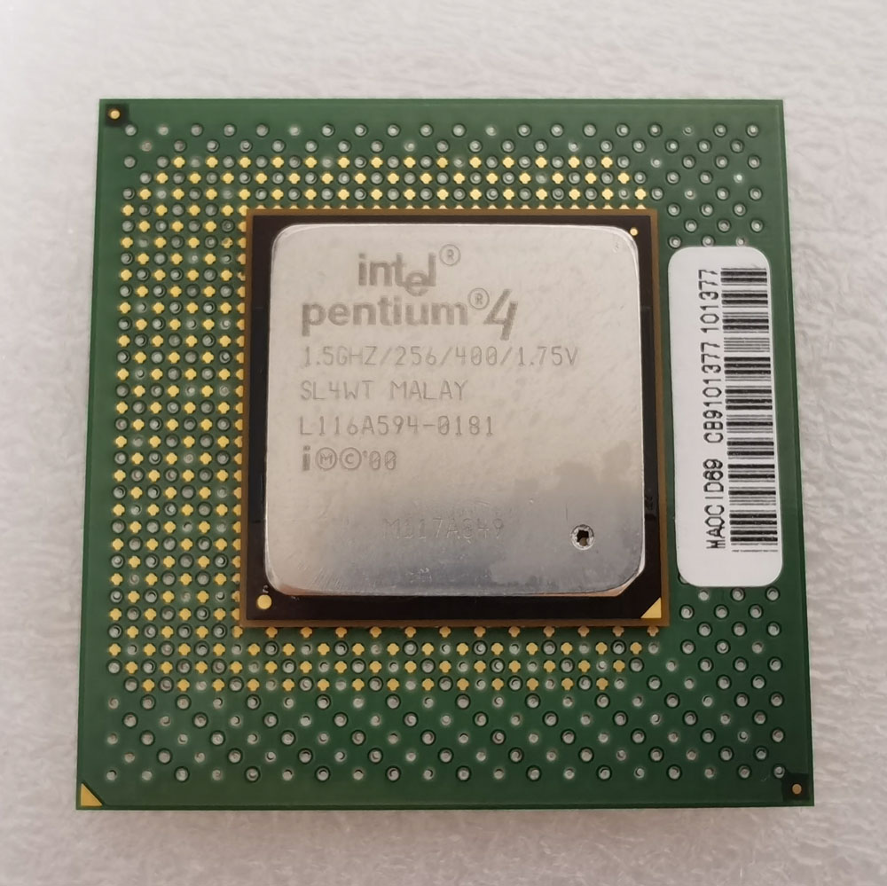 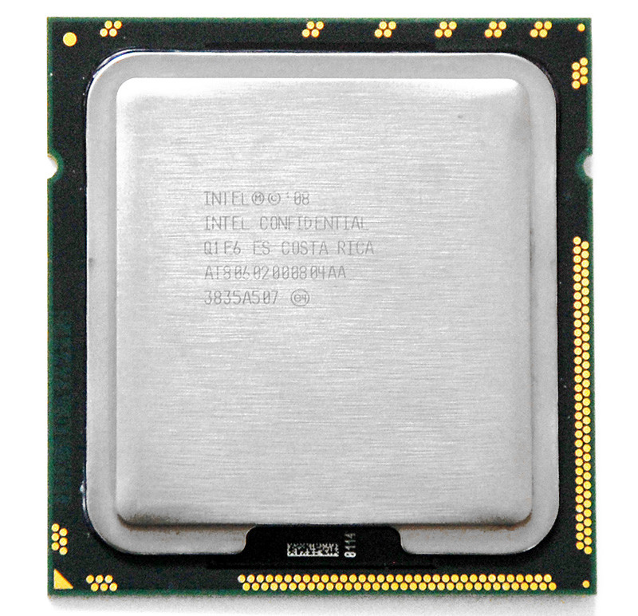
Om de schaal te zien van hoe moeilijk het steeds maar wordt om CPU's in elkaar te zetten zijn hier CPU's door de jaren heen. (Dit zijn niet perse directe tijdlijn verschuivingen.)
DEC M8045 board with gold plated Mostek RAM DIPs from the late 70's. - Een bord waarbij indivuele chips zich gedragen als moderne transistoren voor logica berekeningen.
Een Intel 8008, een 8-bit, 10000nm-transistor (0,001cm) CPU geintroduceerd in 1972. Deze is gemaakt in 1979. De CPU heeft een verversingsfequentie van 800kHz. Dit is maar 2% van wat een normale moderne CPU zou kunnen doen op een frequentie van 4,0GHz. Alleen heeft deze ook maar de mogelijkheid om waarden tussen de 0 en 256 te berekenen. Terwijl we vandaag de dag tussen de 0 en 1,8×10¹⁹ waardes kunnen berekenen, dus de hoeveelheid Intel-8000's in een moderne CPU zijn miljarden en miljarden aan.
De Intel-i386, een van de eerste 32-bit CPUs geintroduceerd op de markt in 1985. Het gebruikt de 1500nm (0,00015cm) transistor technologie, een 85% reductie in grootte, waardoor er meer transistoren in de CPU passen. Hierbij zit dan ook een frequentie van 16MHz bij, een 1900% verbetering in alleen maar de frequentie. De verbetering van 8- naar 32-bit maakt dit een exponentiele verbetering. Hierbij valt ook op te merken dat de hoeveelheid pins aan de onderkant van de chip is verveelvoudigd om de snelheid aan berekeningen bij te benen.
De Intel Pentium 4, iets wat er meer uit ziet als een moderne CPU. Uitgebracht in 2001, gebruikt de 180nm (0,000018cm) transistor technologie. Het heeft in totaal 42M transistoren, op een frequentie van 1,3GHz, terwijl het nog steeds de 32-bit architectuur gebruikt voor berekeningen. Een 8000% verbetering t.o.v. de i386.
De Intel Core-i serie aan CPU's is wat de meeste mensen vandaag de dag nog steeds gebruiken als hun CPU aan keuze. Het gebruikt de 45nm (0,0000045cm) transistor architectuur, en gaat van 1,9GHz naar het huidige maximaal behaalde 9GHz bij een bijbehorende minimale operatie wattage van 80W. Deze lijn aan CPU's zit bijvoorbeeld in alle Apple laptops voor de introductie van hun eigen ARM-CPU lijn toen Apple nog de x86 architectuur gebruikte. Terwijl Intel nu de naam heeft veranderd van hun moderne CPU's naar alleen Intel iX, waarbij X het niveau aan CPU-kracht is, is het nog steeds dezelfde 45nm transistor technologie.
Om echt te laten zien hoe minescuul dit daadwerkelijk is is hier een interactieve weergave. Hierbij is de schaal t.o.v. een vingernagel vergeleken met de grootte van een transistor in een CPU de bijbehorende transistor techniek. Hierbij is alles (behalve de nagel naar de eerste transistor want dat zou 1000000% ingezoemd zijn) op schaal van elkaar.
Hiermee is te laten zien dat men zijn eigen CPU maken niet echt een haalbaar iets is, daarom zijn er nu ook maar twee a drie bedrijven die comsumenten CPU's op de markt brengen. (AMD en Intel; Apple die meetelt als laptop consumenten afdeling. De x86 architectuur van reguliere desktop computers ligt compleet bij AMD en Intel.) De ARM-architectuur is voornamelijk voor Qualcomm, Samsung en Apple, waarbij het voornamelijk gaat over mobiele aparaten zoals mobiele telefoons.
Wat is een transistor?
De eerste transistor
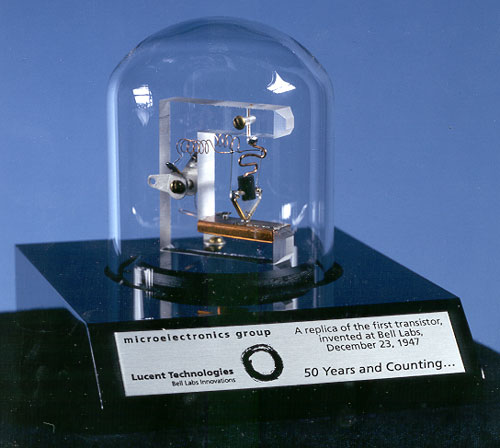
De functie van de allereeste transistor is dat een stroomlading door iets heen kon wanneer een andere ingangstroom. Hierdoor is de originele stroom afhankelijk van een andere lading. Dit is de definite van een transistor. - Hieronder is een praktisch voorbeeld van hoe een transistor in werking gaat. Probeer om de uitgangslading aan te krijgen.
Dit is in de praktijk hoe alle transistors werken. Huidige CPU's hebben deze op microschaal waarbij individuele electronen deze in werking brengen.
De 'analoge' calculatie
Calculeren 'zonder rekenmachine'
Hoe bereken je 1 + 1 zonder over de calculatie na te hoeven denken of een rekenmachine erbij te pakken? Een manier om dit te visualiseren is bijvoorbeeld via domino steentjes, hiermee valt een circuit te maken die electronische circuiten nabootst.
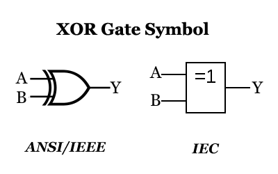 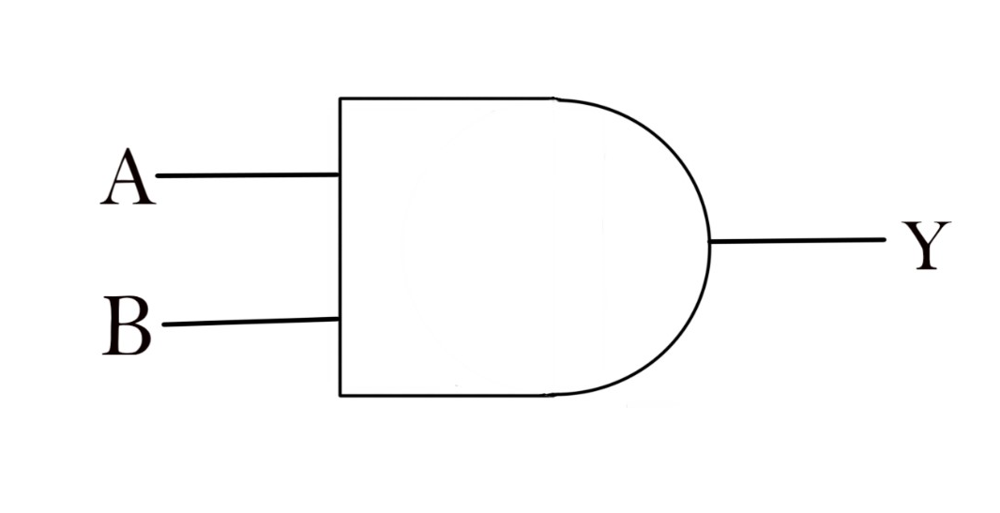
Een voorbeeld hiervan is de 'XOR gate' (geen van beiden). Bij een 'XOR gate' mag geen van de invoegingen waar zijn, zo wel, dan is het beeld ervan onwaar. (Links afgebeeld het IEEE/Amerikaans standaard en rechts de Nederlandse norm)
Een nog andere manier is het op een manier die Michael Stevens, bekend van YouTube kanaal, VSauce, het deed. Via een "digitale" (waarbij een verbinding alleen maar aan of uit kan zijn) connectie met mensen, maakte hij een neuraal kanaal die nummers kon herkennen. (18:30)
Een mens, wat hierbij een neuron voorstelt, in de beginfase, gaat opstaan of blijft zitten. Opstaan als er iets op hun notitie staat en blijft zitten mits het blanco blijft. Daarna, mits hun specifieke drie gaan staan, gaan de mensen in rij twee staan of zitten. - Dit heeft overeenkomsten met een AND-gate/EN-gate in een computer circuit. Waarbij A- en B representatief zijn voor de mensen in de voorste rij en Y de mensen in de rij erachter.
Uiteindelijk is het ook zo dat op het eind bij het herkennen van een cijfer, mensen die opstaan uiteindelijk ook weer gaan zitten. Hierbij is het zo wanneer iemand opstaat voor hun maar iemand anders staat ook weer op dan gaat de originele persoon weer zitten. Dit heeft overeenkomsten met een XOR-gate/NOCH-gate. Opnieuw, waarbij A- en B de personen ervoor voorstellen en de Y de persoon achter.
Hier is een praktisch voorbeeld van een NOCH-gate. Probeer om de uitgangslading te activeren. Doe dit door maar 1 ervan aan te laten.
Uiteindelijk wordt er ook geëxperimenteerd om te zien wat er gebeurt bij ruis bij het signaal of een compleet onbegrijpelijk signaal, waarbij "het kleine brein" nog steeds kon aannemen dat het een getal was, desondanks dat het alleen maar ruis als input had gekregen.
Het domino model
Het domino model berust op het feit dat domino's een voor een vallen, de een naar de ander, en lijkt veel op hoe elektronen- of waterstroming werken. Zoals te zien van Matt Parker van Stand-up Maths / Numberphile.
Hoe domino's zouden calculeren is door het annuleren dat andere domino steentjes omvallen door zelf om te vallen. Hierbij kan je alle klassieke circuits maken van standaard elektronica zoals de AND/EN-gate, XOR/NOCH-gate, et cetera. Deze kan je dan ook bij elkaar toevoegen, mengen en mixen tot een geheel circuit. Iets wat Matt Parker ook heeft gedaan, maar is niet van belang. - Maar zoals hij zelf zegt in de video, "'I do everything from the terminal' [] but you're still interacting with the software level of the computer. - How is the computer actually executing what you're telling it to do. Right down, at the very bottom -- this is the absolute fundamental layer of all computing []."
Het domino model is uit te breiden naar andere platformen die niet domino's gebruiken maar wel dezelfde principes hebben. Platformen zoals Minecraft, Factorio of andere spellen met logica berekeningen. Zolang je de logica-berekeningen hebt om transistoren na te bootsen heb je de mogelijkheid om alles wat computers te doen na te bootsen -- soms in computers zelf. Zo hebben bijvoorbeeld sommigen gehele werkende computers gemaakt, in een spel, draaiend op een computer. Waarbij Assembly werd gebruikt, de meest basis vorm aan programmeren van de letterlijke bits aan de computer geven als programma, om programma's te maken in computers-in-computers-spellen.
Binair
Men in de westerse wereld is bekend met het decimaal systeem, 0, 1, 2, 3, 4, 5, 6, 7, 8, 9. Maar er zijn andere systemen aan tellen. Zo is er de duodecimaal (basis 12), octmaal (basis 8) en wat voornamelijk gebruikt wordt in elektronica en dergelijke systemen aan logica is het binaire (basis 2) systeem.
Om van een decimaal naar een basis X getal te gaan zou je het moeten delen door de machten van X en de rest ervan behouden, bijvoorbeeld;
794
(b10)
?
(b2)
10^2
10^1
10^0
7
9
4
Als we 794 delen door de dichtsbijzijnste kracht van 2, wat 512 is, en de rest behouden krijgen we 1r282. - Als we dan de 282 weer delen door de dichtsbijzijnste macht van 2, wat 256 is, en de rest behouden is het 1r26. Als we dit weer doen, 2 delen door de dichtsbijzijnste macht van 2, wat 16 is, krijgen we 1r10, opnieuw, 1r2, opnieuw 1.
We hebben dus een 512, wat 2^9 is, een 256, wat 2^8 is, een 16, wat 2^4 is, een 8, wat 2^3 is en een 2, wat 2^1 is.
2^9
2^8
2^7
2^6
2^5
2^4
2^3
2^2
2^1
2^0
1
1
0
0
0
1
1
0
1
0
Hierbij hebben we een decimaal getal geconverteerd naar een binair getal. Van 794 naar 1100011010. De omgekeerde conversie is hoe computes dan weer hun interne geheugen weer omzetten in ons gebruikelijk decimaal systeem.
Dit is handig omdat de meeste (niet-quantum) computers werken met een digitaal systeem, waarbij statussen alleen kunnen wisselen tussen aan- en uit. - Het is te merken bij het interactieve gedeelte dat het decimaal getal altijd onder een macht van 2 uitkomt als je alles onder een macht aan hebt staan. Dit is omdat je ook 0 erbij moet tellen als een optie. (Dus 2^4+2^3+2^2+2^1+2^0+1 = 2^5)
Het pad van een electron door een computer;
Om alles zo simpel mogelijk te maken gebruiken we een x86 Intel CPU, draaiende op 1GHz. We gaan op gelijkspanning omdat het beter voor te stellen is. Dit is bovendien ook een standaard computer met standaard computer onderdelen.
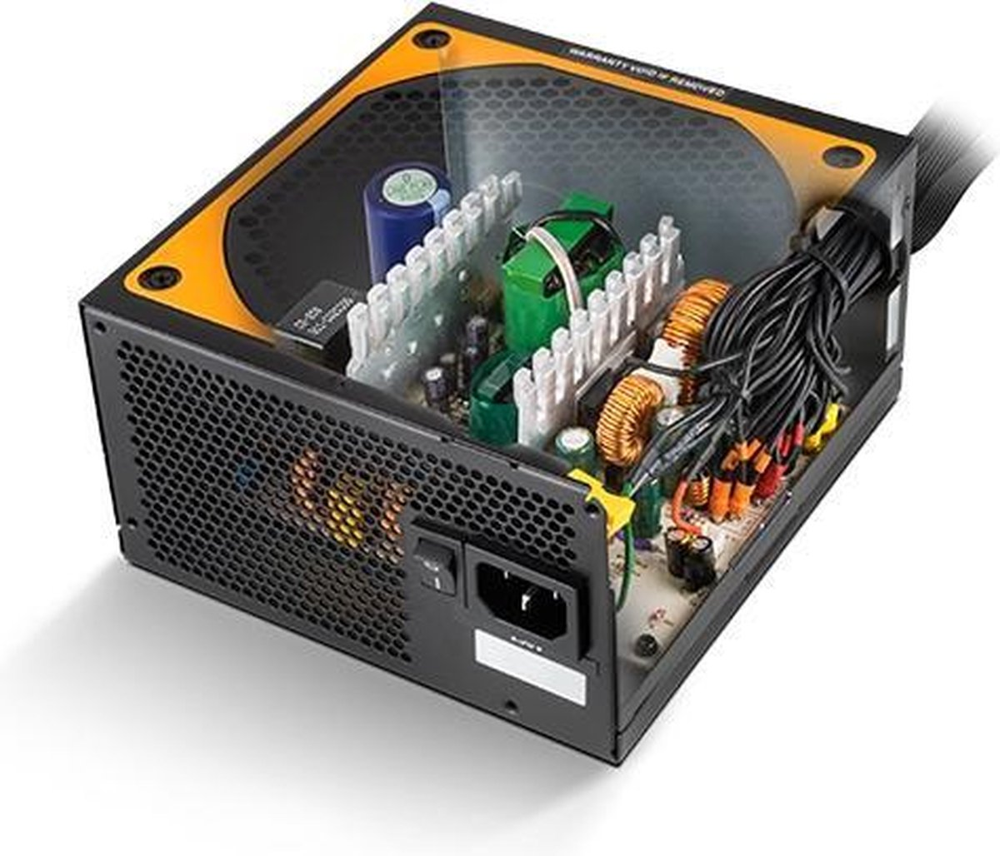 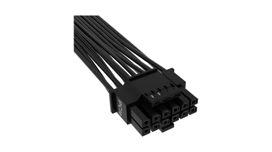 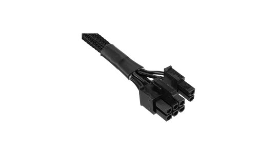 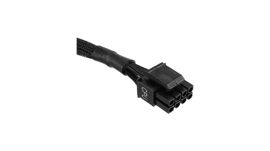 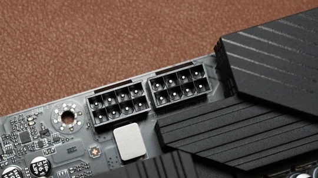
Beginnende bij de spanning vanuit de muur. - Deze stroom aan elektrische energie bestaat uit 230V wisselspanning op een verversingsfequentie van 50Hz (in Europa/Nederland). Hierbij is het zo dat de elektron elke seconde vijftig keer heen en weer beweegt. In plaats daarvan gebruiken we hierbij gelijkspanning omdat het gemakkelijker voor te stellen is. Bij het gebruik van een CEE7/17, CEE7/7 of de standaard Type F (zie afbeelding), kan het een maximale stroomsterkte aan van 16A. Een reguliere computer of laptop kan enkele van deze in gebruik nemen.
De elektron gaat zogenaamd (Niet echt, dit is wisselspanning dus gaat het niet door de kabel heen maar verschuift zich heen en weer. Bij gelijkspanning is het wel zo dat het naar voren geleid wordt.) door de kabel heen. Deze is vaak gemaakt van koper, vanwege de prijs-kwaliteit verhouding. Mits deze kabel goed geinstalleerd is, zal deze in een PSU (Power Supply Unit, oftewel voedingsbron).
De voedingsbron zorgt ervoor dat enige wisselstroom die er is, wat zo is over zowat de gehele aardbodem, wordt omgezet in een standaard voltage voor alle componenten in de computer. Dit verschilt per component. Modernere componenten, zoals NVIDIA 40xx GPU's, hebben 12V-2x6 verbindingskabels. Die, zoals de naam al aangeven, 12V geven met 2 bij 6, dus 12, verbindpunten. Helaas hebben deze kabels ook het probleem dat ze snel in de hens gaan, dus zijn ze nog niet overal standaard. Voor nu is het de 6-pin/6+2-pin standaard verbindingskabel.
En deze kabels zijn bedoeld voor GPU's en GPU processen, er zijn speciale kabels voor CPU doeleinden, zoals hieronder afgebeeld.
Dit verbindt uiteindelijk dan met het moederbord via de CPU verbindingspoort, hieronder afgebeeld.
Deze geleidt stroom naar de CPU via het moederbord. Dit gaat via "PCB Traces", of "moederbord sporen". Moederborden zijn voornamelijk gemaakt van ongeleidelijk materiaal die geen stroom doorlaten, maar tussen de lagen heen zit geleidelijk materiaal zodat er stroom doorheen kan lopen. Dit is extreem handig voor complexe circuits en logistieke elektronica. Dit zorgt ook voor minder benodigdheden voor voor kabels, wat voor minder vervuiling zorgt maar wel voor minder goede reparatie voor individuelen.
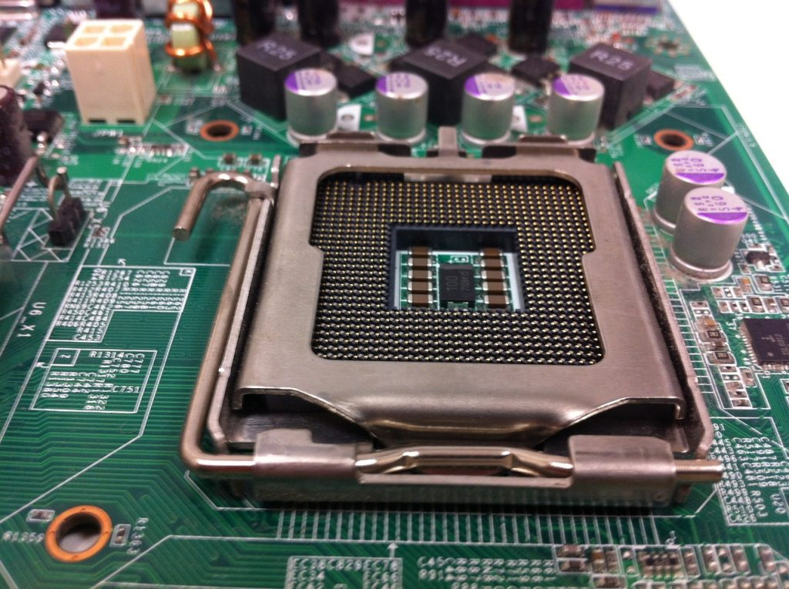 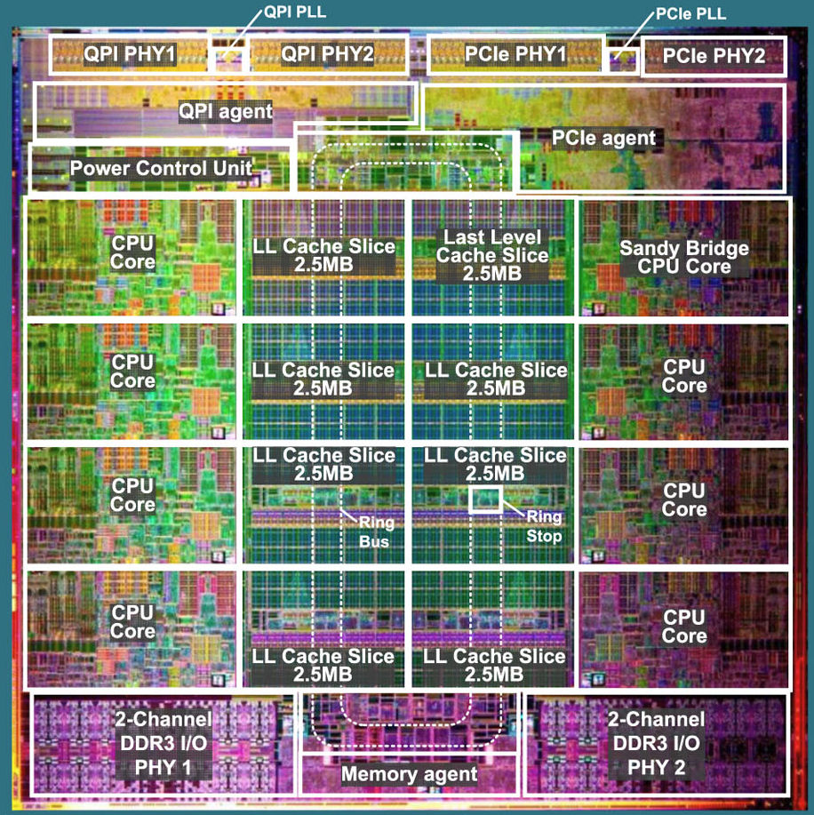
De stroom gaat van de stroomingang via de kabels naar het moederbord. Dit gaat, zoals hiervoor besproken via de moederbord sporen geleidelijk naar de CPU. Hierdoor kan de CPU elektriciteit ontvangen die het specifiek kan 'aanvragen', en het niet hoeft te delen met andere onderdelen van de computer zoals het moederbord die de meeste onderdelen stroom geeft, sans PCI-onderdelen, harde schijven en CPU, deze krijgen hun eigen stroomvoorziening.
Deze stroom wordt verdeeld over de verschillende onderdelen van de CPU. Hierbij is het belangrijk dat je verschil maakt tussen welke CPU je gebruikt, want dit verschilt enorm per bedrijf en zelfs per CPU generatie.
Hierbij zitten pins naar verschillende delen van de CPU die dan van stroom voorzien kunnen worden. Bijvoorbeeld een deel naar de cache (snelle CPU geheugen die alleen door de CPU benaderd kan worden), de Power Control Unit (stroomvoorzieningseenheid), PCIe-Agent (PCIe-voorzieningseenheid) en natuurlijk de CPU-cores (CPU-bronnen, een deel van CPU's die zelfstandig calculaties kan doen. Dit is goed om aparte taken te doen buitenom singulaire taken zoals een rekenmachine zijn.)
De elektron gaat vanaf de 'socket' de CPU binnen. Hierbij volgt het miljarden verschillende transistoren om van plek A naar plek B te komen. Hierbij is het nodig om te weten wat Assembly en zijnde instructies zijn.
Assembly is de meest basis menselijk leesbare en begrijpelijke code die een machine gebruikt om alles te doen in CPU/GPU taal. Dit is om te begrijpen, als mens, wat er nou eigenlijk gebeurt in de CPU om elektronen van de CPU over te dragen naar RAM, of non-permanente geheugen. Dit is hoe een CPU gegevens kan verkrijgen of (terug)geven naar de computer.
Er zijn enorm veel van deze basisinstructies, maar om het simpel te houden, houden we het dus ook met de meest basis van basisinstructies.
ADD
Voegt twee getallen toe.
A + B = C
DIV
Deelt twee getallen.
A / B = C
MOV
Verplaatst een getal ergens anders.
A => C
SUB
Haalt twee getallen van elkaar af.
A - B = C
WAIT
Wacht totdat iets afgelopen is.
A...
LOOP
Herhaal tot, wordt ook gebruikt om terug te gaan naar een waarde.
A ... B ... A
GOTO
Ga terug naar een waarde in de 'stack'.
A ... B
Terwijl er wel meer instructies bestaan, zijn dit de absolute basisinstructies. Gecompliceerdere instructies zijn er eigenlijk alleen maar om deze instructies korter op te schrijven. Alhoewel de SHFT (Shift) instructie wel een belangrijke is voor geoptilamiseerd delen van getallen. (Bijv. is delen door 4, twee bitshifts naar rechts toe. Dit is gemakkelijker voor een computer om te doen dan om iets echt te berekenen.)
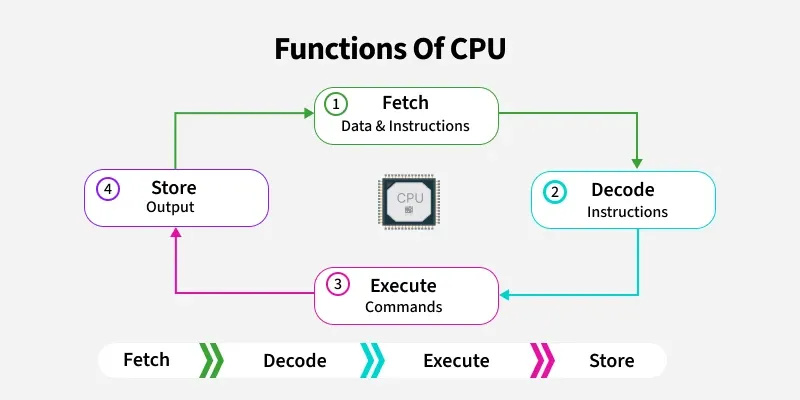
Al deze instructies zorgen ervoor dat bepaalde transistoren open en dicht gaan zodat onze elektron een bepaald pad volgt die wij bepalen. Mits we het resultaat willen behouden, gaat deze elektron via de L3 cache, terug naar het moederbord om opgeslagen te kunnen worden via de RAM. Waarbij het weer teruggevraagd kan worden mits we deze waarde zouden willen gebruiken of veranderen.
Hierbij volgt een cyclus van het ophalen van informatie die nodig is, om dit om te zetten naar instructies voor de CPU, om dit dan ook uit te voeren en om dan het resultaat weer terug te voeren in het non-permanente geheugen. Dit doet dan de CPU van wanneer het aan staat totdat de computer uitgezet wordt/zichzelf uitzet.
Hieronder is een voorbeeld van hoe een CPU de instructies verwerkt.
0:
1:
2:
3:
4:
5:
Evaluatie
Ik was voornamelijk bezig met de voorkennis, wat ook wel gepast is, er zijn veel dingen nodig om te weten voordat men kan beginnen met weten waar het over gaat. Ik wou dat dit gericht was zodat m'n moeder nog zou weten waar dingen over gingen zonder verward te raken terwijl ze het leest.
Ik heb geleerd dat ik compleet niet goed ben in mijn tijd verdelen, maar wel dat ik enorm veel werk onder stress. Ik werk het beste in een keer dan verdeeld over meerdere sessies. Het heeft me wel aangeleerd hoe ik meer werk in meerdere sessies, maar alsnog moet ik het nog wel beter aanleren. Ik werk niet al te goed in m'n thuisomgeving en werk vele malen sneller in een schoolomgeving. Daar is het wel uitermate beter om in sessies aan het werk te gaan dan in een keer.
Ik kwam erachter dat een SSH server initaliseren op m'n eigen server om dan op school Visual Studio te downloaden om op schoolcomputers te werken veel gemakkelijker was dan gedacht, dus kon er al veel eerder van tevoren aan gewerkt worden.
Het feit dat deze gehele pagina werkt zonder enige JavaScript is, in mijn opzicht, adembenemend. Iets wat waarschijnlijk niemand boeit behalve extreme nerds. CSS, een taal die niet wordt gezien als programmeertaal, heb ik gebruikt als programmeertaal voor alles op deze pagina. -- CSS gebruikt een 'counter', waarbij je het kan incrementeren met een bepaald aantal getallen naar wens. Deze kan dan weer gebruikt worden in de calc() functie om dan gebruikt te worden als variable in berekeningen. Dit kan dan weer in de content: functie gebruikt worden om de waarde weer te geven. Alles wat hier werkt met berekeningen maakt hier gebruik van en ik ben hier enorm trots op ookal boeit waarschijnlijk niemand anders dat.
Ik ben wel blij dat ik koos voor een website als formaat van PWS want dit is zo veel gemakkelijker om te veranderen, maken, stijlen en zelf gemaakte onderdelen aan toe te voegen dan een simpel .docx document. Bovendien kan ik makkelijk bijhouden hoeveel uren ik hier al aan had besteed met een simpel commando in de F12-console. Een docx bestand zou alleen maar zorgen voor irritatie en een saai eindproduct. Deze tekst is nu al meer interessanter dan een standaard .docx. Het test wel hoe m'n jaren aan ervaring met webdevelopment uiteindelijk naar dit eindproduct leidde.
Ik ben niet super trots op hoe de website eruit ziet maar ik ben er ook niet ontevreden mee. Ik zou het vast meer haten in de toekomst als er allemaal bewegende onderdelen in zitten en allemaal animaties en andere rotzooi die alleen ik, in het nu, zou waarderen, want dat gebeurt wel eens vaker. Alleen is het wel wat jammer dat ik nooit heb getest of de pagina werkt op mobiel, dus waarschijnlijk dus niet. (Nogal een standaard regel in Web Development, als het werkt op desktop, werkt het waarschijnlijk niet op mobiel, maar vice versa wel.)
Alle interactieve onderdelen, ben ik allemaal wel trots op. Ze kostten waarschijnlijk de meeste moeite van allemaal. Waarbij ik de logistieke berekeningen die ik heb geleerd heb moeten gebruiken om ze te programmeren in de achtergrond. Om te zien hoe ik het deed kan je in de .css kijken en het proberen te begrijpen. Het is heel veel als x dan y logistiek.
Ik probeerde alles bij te houden qua bronnen, maar uiteindelijk werd dat ook wel een beetje een rotzooi met het bijhouden, gelukkig is het wel bij te houden ookal kost het wat moeite. Zoals dat sommige bronnen er wel zijn qua informatie maar niet uitgestipt zijn als bron in de tekst of in foto vorm.
Dit is waarschijnlijk wel de meeste moeite die ik in een singulaire webpagina heb gestopt, en ik ben in het algemeen wel tevreden met het eindproduct.